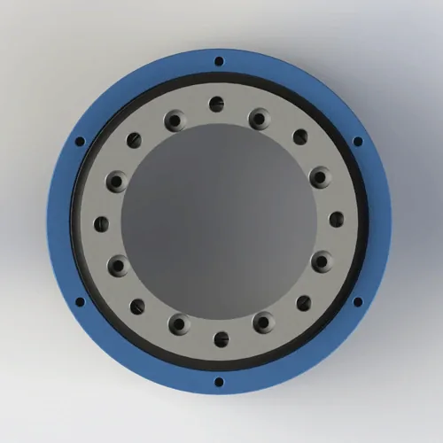

空気および軽い流体の塗布のための2passageの回転式接合箇所。 PTFEの合成のシール、アルミ合金6061ボディ。 最高 1 MPa/10 棒、162 の mm の外径、4.26 の kg。 複数のアクチュエータの回転式テーブルのための4つの出口の港に2つの入口の供給を分配して下さい。 発送日は7日間。
BP-2P-95-0001は空気および軽い流動配分のために設計されている2-in-4-out ロータリージョイントです。 正式なデッサンは1 MPa、200 RPMの最高回転速度、およびアルミ合金6061ボディの最高の圧力を指定します。 PTFEの合成シールはそれらの限界内の多用性がある空気、水、冷却剤および軽いオイル用途を支えます。
| 型式番号 | BP-2P-95-0001の特長 |
|---|---|
| 流路 の数 | 2-in-4-out (2つの入口、4つの出口) |
| マウントタイプ | フランジ取付 (8-M5 + 2-M10) |
| 最高の圧力 | 1 MPa/10 bar |
| 最高の速度 | 200 RPM —連続的な油圧オイル義務のための150 RPMにderate |
| ボディ材料 | アルミ合金6061 |
| シールタイプ | PTFE (テフロン) FKM Oリングバックアップとシールを合成 |
| 互換性のあるメディア | 空気、水、水溶性の冷却剤、軽い油圧オイル(ISO VG 32最高) |
| 動作温度 | -20°C に +80°C |
| 純重量 | 交通アクセス 4.26 kg (4,260 g) |
| 外の直径 | 162 mmの特長 |
| 摩擦トルク | 0.20–0.40 N・m (空気)/0.30–0.60 N・m (油圧オイル) |
| 認定資格 | ISO 9001:2015のセリウム、RoHS |
| 品質保証 | 12ヶ月 |
アルミ合金6061ボディ: 正式な技術図面はアルミ合金6061を指定します。 陽極酸化された表面は断続的な水および冷却剤の露出のための耐食性を支えます。
PTFEの合成シール: PTFEの合成シールは承認された1 MPa/10 bar圧力限界内のリストされた媒体との低い摩擦そして両立性を提供します。 FKM Oリングはハウジング インターフェイスで静的なシーリングを提供します。
フランジの設計: ボルトパターン、ポート配置、合う次元および許容を点検するのに公式2Dのデッサンを使用して装置フランジを機械で造る前に。
BP-2P-95-0001は回転式用途のために2つの入口の供給が4つのアクチュエーターに分配されなければならない設計されています。 このモデルは、流路のカウント、マウント、媒体、1 MPaの圧力制限、速度、温度制限が機械の要件に一致したときにリストされた用途に適しています。
適切なインストールは、承認された1 MPa最大圧力で重要です。 間違った直線、フランジの準備、ホースのローディング、または締める物の選択はシーリング インターフェイスを歪め、漏出を引き起こします。 公式の図面と用途固有のエンジニアリングガイダンスに従ってください。
装置 フランジ は機械化かアセンブリの前に公式 2D のデッサンに一致させます確認して下さい。 デッサンで示される厳密なボルトパターン、P.C.D.s、穴径、深さおよび許容を確認して下さい。 ウェブページテキストだけでは、ファスナーサイズを差し込みません。
ばねの洗濯機が付いている8×M5および2×M10ねじを使用してフランジを保障して下さい。 トルクM5〜3〜4 N・mとM10〜12〜15 N・m。 3つの段階で締めて下さい:最初にM10ボルトから50%のトルク、そしてM5ボルトから50%のトルク、そして十字パターンの最終的なトルクへのすべてのボルト。 18N・mを超えるM10をトルクしない — AL6061 ハウジングスレッドはストリップします。 キャリブレーショントルクレンチを使用してください。 締めた後、フランジの完全性を確かめるために油圧圧力を加える前に0.5 MPaの空気テストを実行して下さい。
選択された構成に回り止めタブが含まれている場合、軸または放射状の側面の負荷を接合箇所に適用しないで固定ブラケットにそれを保障して下さい。 固定体をシャフトで回転させないでください。 シャフトを結合することからの熱拡張か直線の間違いを防ぐ適切な整理を残して下さい。
1 MPaの最高操作圧力の上の適した安全証拠金が付いているシステム媒体および圧力のために評価される適用範囲が広い供給ラインを使用して下さい。 ロータリージョイントにホースの負荷を移すことを防ぐ。 選択した媒体に適切なろ過を取付け、圧力救助を加えて下さい従ってシステム スパイクはプロダクト評価を超過できません。 ラベルの入口および出口ポートは明らかにします。
負荷なしで低圧および低速で試運転を始めて下さい。 フランジ と ポート の全てのインターフェースをリークチェックし、承認された 1 MPa と 200 RPM の制限にとどまりながら、圧力と速度を徐々に増加させます。 漏出、異常なトルク、振動、または温度上昇が観察された場合テストを止めて下さい。
完全な次元、許容、ねじの指定、フランジのボルト パターン(8-M5 + 2-M10 P.C.D.s)、162 mm OD、シャフトの終わりの条件、シールの溝の細部およびポート配置。 120 KB。
問い合わせ後に提供される3Dファイルを無料で配布しています。 アルミ合金6061ボディ、フランジの幾何学、2-in-4-out ポート配置および土台の特徴を含んでいます。 注文する前にCAD干渉確認のために使用して下さい。
フランジの土台、反回転、ろ過、圧力救助、試運転および維持の点検をカバーする設置ガイド。 650 KB. リリース
アルミ合金6061の物質的なトレーサビリティおよびRoHSの承諾の文書。 ご要望に応じて承ります。
BP-2P-95-0001が正しいモデルかどうかはわかりませんか? 流路のカウント、1 MPaの圧力限界、速度、土台、媒体およびサイズを引用を要求する前に確認するためにこの比較を使用して下さい。
| あなたの条件 | BP-2P-95-0001は合います | より良い代替 | なぜアップグレード/ダウングレード |
|---|---|---|---|
| 2-in-4-outの配分、1 MPaまで、大きい回転テーブル | ✅ 適した — 1 MPa/10 bar、200 RPM、162 mm OD | — | — |
| 2-in-2-out、1 MPaのきれいな環境、費用の敏感 | 〇 オーバースペックとオーバープライス | BP-2P-0001の特長 | 1 MPaの評価される、鋼鉄部品無し、60%の安価 |
| 2-in-4-out、3–5 MPa、必要な防塵 | ⚠ 動作するが、ほこり無し シール | BP-2P-130-0001の特長 | 、評価される5 MPaは塵シールオプションと合うことができます |
| 4つの独立した入口(2イン-4アウトの配分ではない) | 〇 間違った構成 | カスタム 4イン-4アウト | 各入口のための独立したシールは圧力クロストークを防ぎます |
| 食品対応か医学、圧力 | FDA ではない × の標準的な FKM | カスタム FDA対応 | 304/316ステンレス鋼ボディ、FDA 21 CFR 177.2600 シールのクリーンルームの包装 |
| 連続的な水液浸 | 〇材料とシールレビューを要求する | カスタムウェットデューティレビュー | 材料、表面処理およびシールの両立性を確認して下さい |
| 速度 >200 RPM 評価される圧力 | ÷ 速度の評価を超過して下さい | カスタム高速レビュー | 技術確認 は速度が高いために要求しました |
フランジを歪め、1 MPaの最高圧力の下の漏出道を作成できる間違いの締める物の選択かトルクは。 ルール: 正式な2Dのデッサンおよび承認された取付けの指示を使用してアセンブリの前に厳密な締める物パターン、きつく締まる順序およびトルクを確認します。
PTFE シールで空気、水、冷却剤、または軽いオイルの粒子が埋め込まれ、シーリング表面をスコアします。 特定の限界の外でろ過か操作は早期漏出を引き起こすことができます。 ルール: 媒体、汚染レベルおよび義務周期に従ってろ過を選び、1 MPaの下で作動圧力を保って下さい。
回転テーブルの機械デザイナーは4つの独立した機能を必要とし、「4つの出口は4つの独立したチャネルを意味します」と仮定します。 BP-2P-95-0001は2つのin-4-outのディストリビューターです:4つの出口への2つの入口は、4つの独立した入口ではなく、4つの出口に分けます。 ルール: 異なる圧力ソースを接続する前に、内部チャンネルの配置を確認します。 4つの独立した回路が必要な場合、真の4-in-4-outデザインを指定します。
その他のロータリージョイントは、流路カウント、マウント、中空径、または圧力要件が異なるとき、BP-2P-95-0001と一般的に比較します。
正式な工学のデッサンはアルミ合金を指定します 6061 ボディ、最高の圧力の 1 MPa / 10 棒、最高速度の 200 RPM、動作温度 -20°C への +80温度 °C。 代替材料または構成については、別々の検証文書のBegapunkエンジニアリングにお問い合わせください。
はい — PTFE の合成 シール は承認された限界の 用途 が残っているとき、水溶性の冷却剤および軽い油圧オイル(ISO VG 32)と互換性があります。 アルミ合金6061ボディは陽極酸化されます。 連続した水デューティー、脱イオン水、攻撃的クーラント、または汚染レベルの不確実性については、Begapunkに材料、シール、およびろ過レビューにお問い合わせください。
ダウンロード は、フランジ パターン、P.C.D.s、穴のサイズ、穴の深さ、および許容のための公式の 2D PDF 図面を描きます。 注文する前にフランジのマッチを一致させる装置を保障し、ウェブページテキストだけからの締める物のサイズを妨げないで下さい。 カスタム フランジのパターンは別の技術確認を要求します。
はい — 3D STEP および IGES ファイルは、お問い合わせの送信後に提供されます。 ファイルはアルミ合金6061ボディ、フランジの幾何学、2-in-4-out ポート配置および162 mmの外径を含んでいます。 3Dファイルを使用して、クリアランス、ポート方向、フランジエンゲージメント、ホース配管経路スペースを注文する前に確認します。 ファイルの可用性と応答時間は、モデルとプロジェクト情報に依存します。
用途が2-in-4-out、1 MPa、または200 RPMの封筒を上回るときカスタム設計レビューを要求して下さい;4つの独立した入口を要求して下さい;研摩剤、腐食剤、食品対応、またはクリーンルーム媒体を使用して下さい;または別のボディ材料を必要とします。 カスタム機能および調達期間は実際の作動の条件に対して確認されなければなりません。
流路、圧力、ねじのタイプおよび土台様式のあらゆる数のためのカスタムロータリージョイントを設計します。 すべてのお問い合わせで3D STEPファイルを無料で入手できます。 典型的なカスタムリードタイム:10〜14日。
リクエスト カスタム設計 →技術的なノート: 正式な技術図面は1 MPa/10 bar、200 RPMの最高回転速度、アルミ合金6061ボディおよび-20°Cから+80°Cの動作範囲をリストします。 実際の性能は媒体、温度、義務周期、取付けおよび維持によって決まります。 Begapunkエンジニアリングは用途のためにこれらの制限を外します。 最終更新日: 2026年7月12日